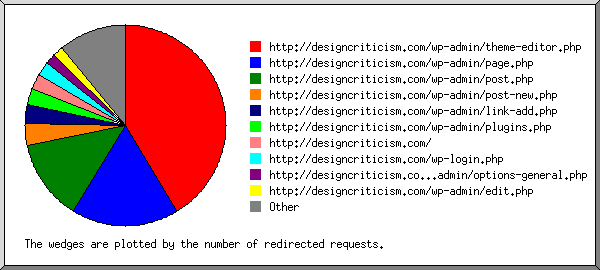
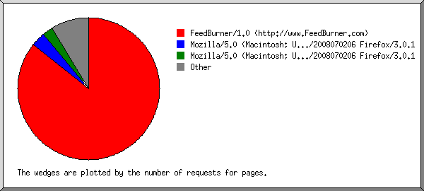
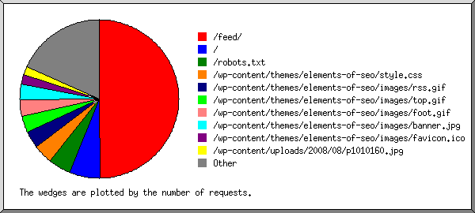

(Go To: Top | General Summary | Monthly Report | Daily Summary | Hourly Summary | Domain Report | Organization Report | Redirected Referrer Report | Failed Referrer Report | Referring Site Report | Browser Report | Browser Summary | Operating System Report | Status Code Report | File Size Report | File Type Report | Directory Report | Request Report)

Listing referring URLs, sorted by the number of redirected requests.
| #reqs | URL |
|---|
| 95 | http://designcriticism.com/wp-admin/theme-editor.php |
| 63 | http://designcriticism.com/wp-admin/theme-editor.php?file=/themes/elements-of-seo/style.css&theme=Elements+of+SEO&a=te |
| 40 | http://designcriticism.com/wp-admin/page.php |
| 26 | http://designcriticism.com/wp-admin/page.php?action=edit&post=2&message=1&_wp_original_http_referer=http://designcriticism.com/wp-admin/edit-pages.php |
| 30 | http://designcriticism.com/wp-admin/post.php |
| 10 | http://designcriticism.com/wp-admin/post.php?action=edit&post=26&message=1&_wp_original_http_referer=http://designcriticism.com/wp-admin/edit.php |
| 8 | http://designcriticism.com/wp-admin/post-new.php |
| 7 | http://designcriticism.com/wp-admin/link-add.php |
| 6 | http://designcriticism.com/wp-admin/plugins.php |
| 5 | http://designcriticism.com/wp-login.php |
| 4 | http://designcriticism.com/wp-admin/options-general.php |
| 4 | http://designcriticism.com/wp-admin/edit.php |
| 3 | http://designcriticism.com/2008/testing-ampersand/ |
| 3 | http://designcriticism.com/wp-admin/profile.php |
| 2 | http://designcriticism.com/wp-admin/themes.php |
| 1 | http://designcriticism.com/wp-admin/page-new.php |
| 1 | http://designcriticism.com/wp-admin/link-manager.php |
| 1 | http://designcriticism.com/wp-admin/options-privacy.php |
| 1 | http://designcriticism.com/wp-admin/ |
| 1 | http://designcriticism.com/wp-admin/options-discussion.php |
| 1 | http://designcriticism.com/wp-admin/users.php |
| 1 | http://whois.domaintools.com/designcriticism.com |
| 1 | http://designcriticism.com/wp-admin/options-writing.php |
| 1 | http://www.feedburner.com/fb/a/analyze/site/visitors/detail |
(Go To: Top | General Summary | Monthly Report | Daily Summary | Hourly Summary | Domain Report | Organization Report | Redirected Referrer Report | Failed Referrer Report | Referring Site Report | Browser Report | Browser Summary | Operating System Report | Status Code Report | File Size Report | File Type Report | Directory Report | Request Report)

Listing browsers with at least 1 request for a page, sorted by the number of requests for pages.
| #reqs | #pages | browser |
|---|
| 2677 | 275 | Mozilla/5.0 (Macintosh; U; Intel Mac OS X 10.4; en-US; rv:1.9.0.1) Gecko/2008070206 Firefox/3.0.1 |
| 1419 | 203 | Mozilla/5.0 (Macintosh; U; Intel Mac OS X 10.4; en-GB; rv:1.9.0.1) Gecko/2008070206 Firefox/3.0.1 |
| 158 | 158 | FeedBurner/1.0 (http://www.FeedBurner.com) |
| 161 | 36 | Mozilla/5.0 (Windows; U; Windows NT 6.0; en-US; rv:1.9.0.1) Gecko/2008070208 Firefox/3.0.1 |
| 86 | 27 | Mozilla/5.0 (Windows; U; Windows NT 6.0; en-GB; rv:1.8.1.16) Gecko/20080702 Firefox/2.0.0.16 |
| 38 | 17 | WebAlta Crawler/2.0 (http://www.webalta.net/ru/about_webmaster.html) (Windows; U; Windows NT 5.1; ru-RU) |
| 41 | 11 | Mozilla/5.0 (Macintosh; U; Intel Mac OS X 10.5; en-US; rv:1.9.0.1) Gecko/2008070206 Firefox/3.0.1 |
| 46 | 7 | Mozilla/5.0 (iPhone; U; CPU iPhone OS 2_0_1 like Mac OS X; en-us) AppleWebKit/525.18.1 (KHTML, like Gecko) Version/3.1.1 Mobile/5B108 Safari/525.20 |
| 37 | 7 | Mozilla/5.0 (Windows; U; Windows NT 5.1; en-US; rv:1.9.0.1) Gecko/2008070208 Firefox/3.0.1 |
| 32 | 6 | Mozilla/5.0 (Macintosh; U; Intel Mac OS X 10_5_4; en-us) AppleWebKit/525.18 (KHTML, like Gecko) Version/3.1.2 Safari/525.20.1 |
| 5 | 5 | Mozilla/4.0 (compatible; MSIE 6.0; Windows NT 5.1; .NET CLR 1.1.4322; .NET CLR 1.0.3705) |
| 14 | 5 | Mozilla/5.0 (compatible; Googlebot/2.1; +http://www.google.com/bot.html) |
| 19 | 4 | Mozilla/5.0 (Macintosh; U; Intel Mac OS X; en-US; rv:1.8.1.16) Gecko/20080702 Firefox/2.0.0.16 |
| 13 | 4 | Mozilla/5.0 (Macintosh; U; PPC Mac OS X Mach-O; en-US; rv:1.8.1.14) Gecko/20080404 Firefox/2.0.0.14 |
| 19 | 4 | Mozilla/5.0 (Macintosh; U; Intel Mac OS X 10_4_11; en) AppleWebKit/525.18 (KHTML, like Gecko) Version/3.1.2 Safari/525.22 |
| 19 | 3 | Mozilla/5.0 (Macintosh; U; Intel Mac OS X 10.5; en-GB; rv:1.9.0.1) Gecko/2008070206 Firefox/3.0.1 |
| 3 | 3 | Mozilla/5.0 (compatible; Firefox compatible; MS IE compatible; +http://search.daum.net/) Daumoa-feedfetcher/2.0 |
| 2 | 2 | Moreoverbot/5.00 (+http://www.moreover.com) |
| 16 | 2 | Mozilla/5.0 (Windows; U; Windows NT 5.1; en-GB; rv:1.8.1.16) Gecko/20080702 Firefox/2.0.0.16 |
| 2 | 2 | BlogPulseLive (support@blogpulse.com) |
| 1 | 1 | Mozilla/5.0 |
| 7 | 1 | Mozilla/5.0 (Macintosh; U; Intel Mac OS X; en-us) AppleWebKit/523.10.3 (KHTML, like Gecko) Version/3.0.4 Safari/523.10 |
| 1 | 1 | Mozilla/2.0 (compatible; MSIE 3.0B; Windows NT) |
| 1 | 1 | HTMLParser/1.6 |
| 7 | 1 | Mozilla/5.0 (Windows; U; Windows NT 5.1; en-US; rv:1.8.1.3) Gecko/20070309 Firefox/2.0.0.3 |
| 1 | 1 | facebookexternalhit/1.0 (+http://www.facebook.com/externalhit_uatext.php) |
| 1 | 1 | Mozilla/4.0 (compatible; MSIE 5.0; Windows NT; DigExt; DTS Agent |
| 8 | 1 | Mozilla/4.0 (compatible; MSIE 6.0; Windows NT 5.1; SV1; InfoPath.1) |
| 1 | 1 | Java/1.6.0_02 |
| 1 | 1 | Java/1.6.0_04 |
| 1 | 1 | Mozilla/3.0 |
| 9 | 1 | Mozilla/4.0 (compatible; MSIE 7.0; AOL 9.1; AOLBuild 4334.34; Windows NT 6.0; SLCC1; .NET CLR 2.0.50727; Media Center PC 5.0; .NET CLR 3.0.04506) |
| 8 | 1 | Mozilla/5.0 (Macintosh; U; Intel Mac OS X; en; rv:1.8.1.16) Gecko/20080803 Camino/1.6.3 (like Firefox/2.0.0.16) |
| 7 | 1 | Mozilla/5.0 (Macintosh; U; PPC Mac OS X Mach-O; en-US; rv:1.8.1.11) Gecko/20071127 Firefox/2.0.0.11 |
| 1 | 1 | http://www.relevantnoise.com; info@relevantnoise.com |
| 8 | 1 | Mozilla/5.0 (Macintosh; U; Intel Mac OS X 10_5_4; en-gb) AppleWebKit/525.18 (KHTML, like Gecko) Version/3.1.2 Safari/525.20.1 |
| 7 | 1 | Mozilla/5.0 (Macintosh; U; Intel Mac OS X; ru-ru) AppleWebKit/523.12 (KHTML, like Gecko) Version/3.0.4 Safari/523.12 |
| 2 | 1 | Gaisbot/3.0+(robot06@gais.cs.ccu.edu.tw;+http://gais.cs.ccu.edu.tw/robot.php) |
| 1 | 1 | Python-urllib/1.16 |
| 71 | 0 | [not listed: 10 browsers] |
(Go To: Top | General Summary | Monthly Report | Daily Summary | Hourly Summary | Domain Report | Organization Report | Redirected Referrer Report | Failed Referrer Report | Referring Site Report | Browser Report | Browser Summary | Operating System Report | Status Code Report | File Size Report | File Type Report | Directory Report | Request Report)

Listing files with at least 20 requests, sorted by the number of requests.
| #reqs | %bytes | last time | file |
|---|
| 459 | 9.11% | Aug/30/08 7:16 PM | / |
| 15 | 0.11% | Aug/14/08 3:21 PM | /?feed=rss2 |
| 408 | 6.90% | Aug/30/08 7:16 PM | /wp-content/themes/elements-of-seo/style.css |
| 334 | 0.16% | Aug/30/08 7:16 PM | /wp-content/themes/elements-of-seo/images/rss.gif |
| 327 | 0.01% | Aug/30/08 7:16 PM | /wp-content/themes/elements-of-seo/images/top.gif |
| 315 | 0.01% | Aug/30/08 7:16 PM | /wp-content/themes/elements-of-seo/images/foot.gif |
| 295 | 15.32% | Aug/30/08 7:16 PM | /wp-content/themes/elements-of-seo/images/banner.jpg |
| 241 | 0.13% | Aug/20/08 12:33 AM | /wp-admin/admin-ajax.php |
| 148 | 7.92% | Aug/19/08 11:02 PM | /wp-admin/theme-editor.php |
| 76 | 4.65% | Aug/12/08 10:52 PM | /wp-admin/theme-editor.php?file=/themes/elements-of-seo/style.css&theme=Elements+of+SEO&a=te |
| 11 | 0.36% | Aug/19/08 11:02 PM | /wp-admin/theme-editor.php?file=/themes/elements-of-seo/r_sidebar.php&theme=Elements+of+SEO&a=te |
| 148 | 0.10% | Aug/31/08 12:36 PM | /feed/ |
| 108 | 2.88% | Aug/12/08 11:46 PM | /wp-content/uploads/2008/08/plastique-218x300.jpg |
| 103 | 0.26% | Aug/30/08 7:16 PM | /wp-content/themes/elements-of-seo/images/favicon.ico |
| 89 | 1.48% | Aug/28/08 3:45 PM | /authors/ |
| 85 | | Aug/11/08 9:56 PM | /wp-content/themes/elements-of-seo/images/bullet.gif |
| 70 | 10.27% | Aug/30/08 7:16 PM | /wp-content/uploads/2008/08/p1010160.jpg |
| 66 | 1.63% | Aug/28/08 3:45 PM | /wp-content/uploads/2008/08/mypicture-300x296.jpg |
| 62 | 1.39% | Aug/28/08 3:45 PM | /wp-content/uploads/2008/08/rebecca.jpg |
| 54 | 3.97% | Aug/12/08 11:13 PM | /wp-admin/page.php |
| 33 | 2.47% | Aug/12/08 11:13 PM | /wp-admin/page.php?action=edit&post=2&message=1&_wp_original_http_referer=http://designcriticism.com/wp-admin/edit-pages.php |
| 14 | 1.00% | Aug/12/08 10:56 PM | /wp-admin/page.php?action=edit&post=2 |
| 52 | 2.52% | Aug/12/08 10:15 PM | /wp-content/themes/elements-of-seo/images/banner2.jpg |
| 52 | | Aug/30/08 1:09 AM | /robots.txt |
| 45 | 1.22% | Aug/19/08 11:29 PM | /wp-admin/media-upload.php |
| 40 | 3.32% | Aug/20/08 12:31 AM | /wp-admin/post.php |
| 16 | 1.33% | Aug/12/08 10:26 PM | /wp-admin/post.php?action=edit&post=26&message=1&_wp_original_http_referer=http://designcriticism.com/wp-admin/edit.php |
| 40 | 1.18% | Aug/20/08 12:31 AM | /wp-admin/edit.php |
| 37 | | Aug/20/08 12:31 AM | /wp-cron.php |
| 37 | | Aug/20/08 12:31 AM | /wp-cron.php?check=8df0df8fbc36a4526e741324429808d7 |
| 36 | 0.13% | Aug/19/08 10:50 PM | /wp-admin/index-extra.php |
| 33 | 1.16% | Aug/19/08 10:52 PM | /wp-admin/themes.php |
| 27 | 0.39% | Aug/11/08 10:42 PM | /about/ |
| 23 | 0.55% | Aug/12/08 10:06 PM | /2008/testing-ampersand/ |
| 22 | 1.17% | Aug/19/08 10:50 PM | /wp-admin/wp-admin.css |
| 22 | 1.17% | Aug/19/08 10:50 PM | /wp-admin/wp-admin.css?ver=2.6 |
| 22 | 0.76% | Aug/19/08 10:52 PM | /wp-admin/options-general.php |
| 22 | 0.06% | Aug/19/08 10:50 PM | /wp-admin/js/common.js |
| 22 | 0.06% | Aug/19/08 10:50 PM | /wp-admin/js/common.js?ver=20080318 |
| 22 | 0.96% | Aug/12/08 11:18 PM | /wp-admin/ |
| 22 | 0.20% | Aug/19/08 10:50 PM | /wp-includes/js/jquery/jquery.color.js |
| 22 | 0.20% | Aug/19/08 10:50 PM | /wp-includes/js/jquery/jquery.color.js?ver=2.0-4561 |
| 22 | 1.43% | Aug/19/08 10:50 PM | /wp-includes/js/jquery/jquery.js |
| 22 | 1.43% | Aug/19/08 10:50 PM | /wp-includes/js/jquery/jquery.js?ver=1.2.6 |
| 22 | 0.14% | Aug/19/08 10:50 PM | /wp-admin/css/global.css |
| 22 | 0.14% | Aug/19/08 10:50 PM | /wp-admin/css/global.css?ver=2.6 |
| 21 | 0.83% | Aug/19/08 11:10 PM | /wp-admin/index.php |
| 21 | 0.67% | Aug/12/08 9:19 PM | /wp-admin/css/colors-fresh.css |
| 21 | 0.67% | Aug/12/08 9:19 PM | /wp-admin/css/colors-fresh.css?ver=2.6 |
| 1098 | 21.78% | Aug/20/08 12:31 AM | [not listed: 170 files] |
 Web Server Statistics for designcriticism.rebeccacottrell.co.uk
Web Server Statistics for designcriticism.rebeccacottrell.co.uk ) represents 25 requests for pages or part thereof.
) represents 25 requests for pages or part thereof.